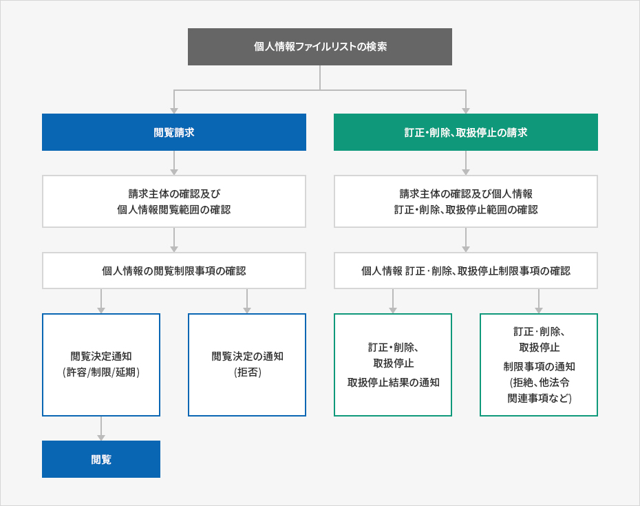

プライバシーポリシー
- Home
- ホームぺージ利用案内
- プライバシーポリシー
<Invest KOREA> が取り扱う全ての個人情報は、関連法令に基づいて収集・保有及び処理されています。
「個人情報保護法」はこのような個人情報の取り扱いに対する一般的な規範を示しており、<Invest KOREA>はこのような法令の規定により収集・保有及び処理する個人情報を、適切な公共業務の遂行と利用者の権益保護のために適法かつ適正に処理します。
また<Invest KOREA>は関連法令で定めるところにより、保有している個人情報に対する閲覧、訂正・削除、処理停止の要求などの利用者の権益を尊重し、利用者はこのような法令上の権益の侵害などについて、行政審判法で定めるところにより行政審判を請求することができます。
<Invest KOREA>は「個人情報保護法」第30条に基づいて、情報主体の個人情報及び権益を保護し、個人情報に関連する利用者からの苦情を円滑に処理できるよう、以下のようなプライバシーポリシーを策定・公開しています。
第1条 (個人情報の処理目的)
- ① <Invest KOREA>は、お客様に対するサービスの提供および苦情処理等を目的に、必要最小限の個人情報を収集しています。
- ② <Invest KOREA>で「個人情報保護法」第32条に基づき登録・公開される個人情報ファイルの処理目的は、以下の通りです。
| 番号 | 個人情報ファイルの名称 | 運営根拠 | 処理目的 |
|---|---|---|---|
| 1 | Invest KOREAの ホームページ会員 | 情報主体の同意 | 対内投資情報の提供 |
第2条 (個人情報の処理及び保有期間)
- ① <Invest KOREA>は、個人情報を以下の目的のために処理します。処理した個人情報は、以下の目的以外の用途には使用されず、利用の目的が変更される場合には、個人情報保護法第18条に基づいて、改めて同意を得るなど必要な措置を取る予定です。
-
② <Invest KOREA>が個人情報保護法第32条に基づいて登録・公開する個人情報ファイルの処理目的は、以下の通りです。
第2条 (個人情報の処理及び保有期間) 番号 個人情報ファイルの名称 運営根拠 保有期間 1 Invest KOREAの ホームページ会員 情報主体の同意 退会時まで
第3条 (個人情報の第三者提供)
<Invest KOREA>は原則として情報主体の個人情報を、収集・利用の目的として明示した範囲内で処理し、以下の場合を除いては、情報主体の事前同意を得ずに本来の目的範囲を超えて処理したり、第三者に提供しません。
- 1. 情報主体から別途の同意を得た場合
- 2. 法律に特別規定がある場合
- 3. 情報主体又は法定代理人が意思表示のできない状態にあるか、住所不明などにより事前に同意が得られない場合であり、情報主体又は第三者の生命・身体・財産の利益のために緊急に必要であると明らかに認められるとき
- 4. 統計作成及び学術研究などの目的のために必要な場合であり、個人を特定できない形で個人情報を提供するとき
- 5. 個人情報を目的以外の用途に利用、又はこれを第3者に提供しなければ、他の法律で定める所管業務を遂行できない場合であり、保護委員会の審議・議決を経たとき
- 6. 条約、その他の国際協定を履行するために、外国政府又は国際機関へ提供する必要がある場合
- 7. 犯罪の捜査と公訴の提起及び維持のために必要な場合
- 8. 裁判所の裁判業務遂行のために必要な場合
- 9. 刑及び監護、保護処分の執行のために必要な場合
第4条 (個人情報の処理の委託)
-
① <Invest KOREA>は個人情報業務の円滑な処理のため、以下のように個人情報処理業務を委託しています。
第4条 (個人情報の処理の委託) 番号 委託業務 受託会社名 電話番号 勤務時間 1 KOTRA情報システムの運営及びメンテナンス (株)DataCore Systems 02-6404-8811 09:00~18:00 2 顧客案内センターの運営 (株)Leading i 02-390-4200 09:00~18:00 - ② <Invest KOREA>は、委託契約を締結する際に個人情報保護関連法規の遵守、個人情報に関する第三者への提供禁止及び責任負担などを明確に規定し、契約内容を保管しています。受託会社が変更される場合には、ホームページにて告知します。
第5条 (情報主体の権利・義務及びその行使方法に関する事項)
-
① 情報主体(満14歳未満の場合には、法廷代理人が権利を行使できる)は、いつでも次の各号に掲げる個人情報保護関連の権利を行使することができます。
- 1. 個人情報の閲覧の要求
- 2. 誤りなどがあった場合の訂正の要求
- 3. 削除の要求
- 4. 処理停止の要求
- ② 第1項による権利は、個人情報保護法施行規則別紙第8号書式に従って作成した後、書面やEメール、FAXなどを通じて行使することができ、機関はこれについて直ちに措置します。
- ③ 情報主体が個人情報の誤りなどについて訂正又は削除を求めた場合には、訂正又は削除が完了するまで、当該個人情報を利用、又は提供しません。
- ④ 第1項による権利は、情報主体の法定代理人や受任者など代理人を通じて行使できます。この場合、個人情報保護法施行規則別紙第11号書式による委任状を提出しなければなりません。
- ⑤ 個人情報の閲覧及び処理停止の要求は、個人情報保護法第35条第5項、第37条第2項により情報主体の権利が制限されることがあります。
- ⑥ 個人情報の訂正及び削除の要求は、他の法令にその個人情報が収集対象として明記されている場合には、削除を要求することができません。
-
情報主体の権利による閲覧の要求、訂正・削除の要求、処理停止の要求がある場合には、それを要求した者が本人、又は正当な代理人であるかどうかを確認します。
* 本人確認のできる身分証明書(住民登録証、運転免許証、パスポートなど)を提示
* 代理人の場合、代理人であるかどうかを確認できる身分証明書と委任状を提示
* ［個人情報保護法施行規則別紙第8号］個人情報(閲覧、訂正・削除、処理停止)要求書（Click）
* ［個人情報保護法施行規則別紙第11号］委任状（Click） -
⑧ 個人情報の閲覧、訂正・削除、処理停止の請求は、以下の手続きで処理されます。
개인정보파일목록 검색
- 열람청구
- 청구 주체 확인 및 개인정보 열람 범위 확인
- 개인정보 열람 제한사항 확인
- 열람결정 통지 (허용/제한/연기) - 열람
- 열람결정 통지(거부)
- 정정·삭제, 처리정지 청구
- 청구 주체 확인 및 개인정보 정정·삭제, 처리정지 범위 확인
- 개인정보 정정·삭제, 처리정지 제한사항 확인
- 정정·삭제, 처리정지 결과 통지
- 정정·삭제, 처리정지 제한사항 통지(거절, 타 법령 관련 사항 등)


第6条 (処理する個人情報の項目)
<Invest KOREA>は、以下の個人情報項目を処理しています。
| 番号 | 個人情報ファイルの名称 | 個人情報ファイルに記録される個人情報項目 | |
|---|---|---|---|
| 1 | Invest KOREAの ホームページ会員 | 必須 | ID、パスワード、氏名（韓国語又は英語）、業種、会社名、職位、住所、国名、郵便番号、電話番号、Ｅメールアドレス |
| 任意 | ファックス番号 |
第7条 (個人情報の破棄の手続き及び方法)
① <Invest KOREA>は、原則として個人情報の処理目的が達成された場合には、直ちに当該個人情報を破棄します。 但し、他の法律により保存しなければならない場合には、この限りではありません。破棄の手続き、期限及び方法は以下の通りです。
-
ア．破棄の手続き
不要な個人情報及び個人情報ファイルは、個人情報責任者の責任の下、内部方針手続きに沿って以下のように処理しています。
個人情報の破棄保有期間が経過した個人情報は、終了日に直ちに破棄します。
個人情報ファイルの破棄個人情報ファイルの処理目的の達成、当該サービスの廃止、事業の終了など、その個人情報ファイルが不要になった場合には、個人情報の処理が不要であると認められた日に、直ちにその個人情報ファイルを破棄します。 -
イ．破棄方法
電子的ファイルの形で保存された情報は、記録を再生できない技術的方法を使用します。
紙に出力された個人情報は、シュレッダーでの粉砕、又は焼却により破棄します。
第8条 (個人情報の安全性確保措置)
<Invest KOREA>は、「個人情報保護法」第29条に基づき、以下のように安全性確保に必要な技術的、管理的、物理的措置を取っています。
-
1. 個人情報取扱担当者の最小化及び教育
個人情報取扱担当者を指定・最小化して個人情報を管理する対策を実施しています。 -
2. 個人情報へのアクセス制限
個人情報を取り扱うデータベースシステムへのアクセス権の付与、変更、抹消を通じて、個人情報へのアクセス制限のために必要な措置を取っており、侵入遮断システムを利用して外部からの不正アクセスを防御しています。 -
3. アクセス記録の保管
個人情報処理システムへのアクセス記録(ウェブログ、要約情報など)を最低6カ月以上保管ㆍ管理しています。 -
4. 個人情報の暗号化
利用者の個人情報は、暗号化された状態で保存ㆍ管理しています。また重要なデータは、保存及び伝送時に暗号化して使用するなど、別途のセキュリティ機能を使用しております。 -
5. セキュリティプログラムの設置及び定期的な点検 ・更新
<Invest KOREA>は、ハッキングやコンピュータウイルスなどによる個人情報の漏えい及び毀損を防ぐため、セキュリティプログラムを設置し、定期的に更新ㆍ点検を行っています。 -
6. 認可を受けていない者の出入を制限
個人情報を保管している個人情報システムの物理的保管場所を別に設け、出入制限の手続きを策定ㆍ運営しています。
第9条 (個人情報保護に関連する分野別責任者及び担当者の連絡先)
| 個人情報保護責任者 | 個人情報保護管理者 | 個人情報保護担当者 |
|---|---|---|
|
担当部署 : Invest KOREA 韓基元(ハン・ギウォン)代表 Tel : 02-3460-7801 |
担当部署 : 投資企画室 金然植(キム・ヨンシク)室長 Tel : 02-3460-7824 |
担当部署 : 投資広報チーム 辛智仁(シン・ジイン) E-mail : jiin.shin@kotra.or.kr Tel : 02-3460-7842 Fax : 02-3460-7920 |
第10条 (個人情報の閲覧請求)
-
① 情報主体は、個人情報保護法第35条による個人情報の閲覧を、以下の部署に請求することができます。KOTRAは、情報主体の個人情報の閲覧請求が迅速に処理されるように努めます。
※ 個人情報の閲覧請求の受付・処理部署
- 部署名 : 投資広報チーム
- 担当者 : 辛智仁(シン・ジイン)
- 連絡先 : Tel 02-3460-7842 / E-mail jiin.shin@kotra.or.kr / Fax 02-3460-7920
- ② 情報主体は第1項の閲覧請求の受付・処理部署の他に、行政自治部の「個人情報保護総合支援ポータル」ウェブサイト(www.privacy.go.kr)でも、個人情報の閲覧を請求することができます。
※ 行政自治部の個人情報保護総合支援ポータル→個人情報民願→個人情報の閲覧などの要求(公共i-PINを通じた実名確認必要)
第11条 (権益侵害の救済方法)
情報主体は以下の機関に対し、個人情報の侵害に関する被害救済や相談などを申し込むことができます。
<以下の機関はKOTRAとは別の機関であり、KOTRAの自主的な個人情報関連苦情の処理、被害救済の結果に満足できなかったり、より具体的な解決策が必要な場合は、お問い合わせください。>
-
個人情報侵害申告センター(韓国インターネット振興院が運営)
- 所管業務：個人情報の侵害事実の申告、相談の申請
- ホームページ : http://privacy.kisa.or.kr
- 電話番号 : (局番なし) 118
- 住所 : (138-950)ソウル市松坡区中台路135 韓国インターネット振興院・個人情報侵害申告センター
-
個人情報紛争調整委員会
- 所管業務 : 個人情報関連の紛争調整の申請、集団紛争調整(民事的解決)
- ホームページ : http://www.kopico.go.kr
- 電話番号 : 1833-6972
- 住所 : (03171)ソウル市鍾路区世宗大路209政府ソウル庁舎４階の個人情報紛争調整委員会
- 大検察庁サイバー捜査局 : 1301 (www.spo.go.kr, cid@spo.go.kr)
- 警察庁サイバー安全局 : 182 (www.netan.go.kr)
また、個人情報の閲覧、訂正ㆍ削除、処理停止などに関する情報主体の要求に対し、公共機関の長の行った処分、又は不作為のために権利・利益の侵害を受けた者は、行政審判法で定めるところによって行政審判を請求することができます。
※ 中央行政審判委員会(http://www.simpan.go.kr)の電話番号のご案内をご参照下さい。
第12条 (プライバシーポリシーの変更)
① 本プライバシーポリシーは、2017年06月02日より施行されます。
② それ以前のプライバシーポリシーは、以下から確認することができます。
② それ以前のプライバシーポリシーは、以下から確認することができます。